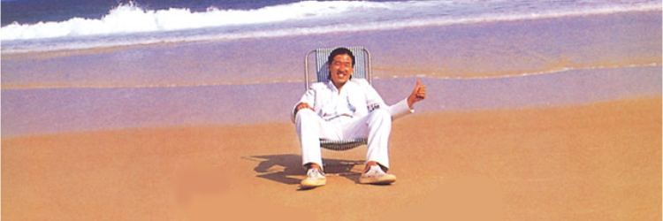

❯ Who are you? - a nobody ❯ Nationality - indonesian (gross...) ❯ Favourite genre of music - shibuya-kei/city pop ❯ What to do for a living? - sleeping my ass off at home ❯ Feel like a - miserable person
"i made it up back in 2021 or so just because i was so obsessed with tech
and the name stuck very well. it also somehow wasn't a taken name anywhere (except pinterest) so it made it fit even better.
it made me special knowing that im the only bluezcreen on earth"Tell me something (anonymous).